MagnusPropagator¶
About the MagnusPropagator class¶
The WaveBlocks Project
@author: R. Bourquin @copyright: Copyright (C) 2010, 2011, 2012, 2013, 2014, 2015, 2016 R. Bourquin @license: Modified BSD License
Inheritance diagram¶

Class documentation¶
-
class
WaveBlocksND.MagnusPropagator(parameters, potential, packets=[])[source]¶ This class can numerically propagate given initial values
 in
a potential
in
a potential  . The propagation is done for a given set of homogeneous
Hagedorn wavepackets neglecting interaction.
. The propagation is done for a given set of homogeneous
Hagedorn wavepackets neglecting interaction.-
__init__(parameters, potential, packets=[])[source]¶ Initialize a new
MagnusPropagatorinstance.Parameters: - parameters (A
ParameterProviderinstance) – AParameterProviderinstance containing at least the keydtfor providing the timestep .
. - potential – The potential the wavepacket feels during the time propagation.
- packet – The initial homogeneous Hagedorn wavepacket we propagate in time.
Raises: ValueError – If the number of components of
does not match
the number of energy levels  of the potential.
of the potential.- parameters (A
-
add_wavepacket(packet)[source]¶ Add a new wavepacket
to the list of propagated wavepackets.Parameters: packet (A tuple  with a
with a HagedornWavepacketinstance and an integer.) – The new wavepacket and its leading component
an integer.) – The new wavepacket and its leading component ![\chi \in [0,N-1]](../_images/math/b07aef8fb164e62cacfd4be92bc7aa04b49d6f7b.png) .
.
-
build(method)¶ Parameters: method – A string specifying the method for time integration. Returns: Two arrays  and
and  .
.Method Order Authors Reference LT 1 Lie/Trotter [1], [3] page 42, equation 5.2 S2 2 Strang [2], [3] page 42, equation 5.3 SS 2 Strang [2], [3] page 42, equation 5.3 PRKS6 4 Blanes/Moan [4] page 318, table 2, ‘S6’ BM42 4 Blanes/Moan [4] page 318, table 3, ‘SRKNb6’ Y4 4 Yoshida [5], [3] page 40, equation 4.4 Y61 6 Yoshida [5], [3] page 144, equation 3.11 BM63 6 Blanes/Moan [4] page 318, table 3, ‘SRKNa14’ KL6 6 Kahan/Li [6], [3] page 144, equation 3.12 KL8 8 Kahan/Li [6], [3] page 145, equation 3.14 KL10 10 Kahan/Li [6], [3] page 146, equation 3.15 [1] H.F. Trotter, “On the product of semi-groups of operators”, Proc. Am. Math. Soc.1O (1959) 545-551. [2] (1, 2) G. Strang, “On the construction and comparison of difference schemes”, SIAM J. Numer. Anal. 5 (1968) 506-517. [3] (1, 2, 3, 4, 5, 6, 7, 8) E. Hairer, C. Lubich, and G. Wanner, “Geometric Numerical Integration - Structure-Preserving Algorithms for Ordinary Differential Equations”, Springer-Verlag, New York, 2002 (Corrected second printing 2004). [4] (1, 2, 3) S. Blanes and P.C. Moan, “Practical Symplectic Partitioned Runge-Kutta and Runge-Kutta-Nystrom Methods”, J. Computational and Applied Mathematics, Volume 142, Issue 2, (2002) 313-330. [5] (1, 2) H. Yoshida, “Construction of higher order symplectic integrators”, Phys. Lett. A 150 (1990) 262-268. [6] (1, 2, 3) W. Kahan and R.-c. Li, “Composition constants for raising the orders of unconventional schemes for ordinary differential equations”, Math. Comput. 66 (1997) 1089-1099.
-
get_potential()¶ Returns the potential
used for time propagation.Returns: A MatrixPotentialsubclass instance.
-
get_wavepackets(packet=None)[source]¶ Return the wavepackets
 that take part in the time propagation by the
current
that take part in the time propagation by the
current MagnusPropagatorinstance.Parameters: packet (Integer or None) – The index (in this list) of a single packet 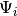 that is
to be returned. If set to
(in this list) of a single packet 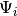 that is
to be returned. If set to None(default) return the full list with all packets.Returns: A list of HagedornWavepacketinstances or a single instance.
-
intsplit(psi1, psi2, a, b, tspan, N, args1=[], args2=[])¶ Compute a single, full propagation step by operator splitting.
Parameters: - psi1 – First evolution operator

- psi2 – Second evolution operator

- a – Parameters for evolution with
- b – Parameters for evolution with
- tspan – Timespan
 of a single, full splitting step
of a single, full splitting step - N – Number of substeps to perform
- args1 – Additional optional arguments of
- args2 – Additional optional arguments of
Note
The values for
args1andargs2have to be of typelisteven in case of single items.- psi1 – First evolution operator
-
order(method)¶ Parameters: method – A string specifying the method for time integration. Returns: The order of this method.
-
post_propagate()¶ Given the wavefunction
 at final time
at final time  ,
perform some computations exactly once after running the ordinary
time propagation and before each time simulation data will be saved.
,
perform some computations exactly once after running the ordinary
time propagation and before each time simulation data will be saved.This method does not raise an exception but instead just does nothing and returns.
-
pre_propagate()¶ Given the wavefunction
at initial time  ,
perform some computations exactly once before running the ordinary
time propagation and after each time simulation data was saved.
,
perform some computations exactly once before running the ordinary
time propagation and after each time simulation data was saved.This method does not raise an exception but instead just does nothing and returns.
-
propagate()[source]¶ Given a wavepacket
at time compute the propagated
wavepacket at time 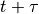. We perform exactly one timestep of size
here. This propagation is done for all packets in the list
and neglects any interaction between two packets.
The semiclassical propagation scheme is used.The Gauss-Legendre rule on the interval
![[-1,1]](../_images/math/49a47d5b84588d4baba9dd7f7e2c5f4251aa643a.png) has two nodes
has two nodes
 and
and
 .
The integration time step is
.
The integration time step is ![[0, 1] dt](../_images/math/b7807dccd10369a3e3f9064171f755dd1b56ffcc.png) , hence we rescale the nodes
onto the interval
, hence we rescale the nodes
onto the interval ![[0, 1]](../_images/math/02b99e25ae92d555c285768eb92a199abd3cf9e2.png) to get
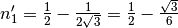 and
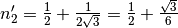.
The two time points
to get
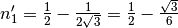 and
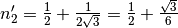.
The two time points  and
and  are then given by
are then given by
 and
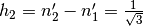.
Given a (matrix) differential equation:
and
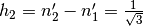.
Given a (matrix) differential equation: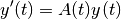
with 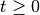. In each timestep of size
 we compute:
we compute: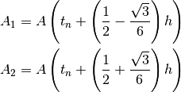
from which we get:
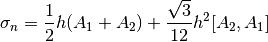
and then we find for the solution:

More details can be found in [7] and [8] and especially formula 2.9 in [9].
[7] S. Blanes and P.C. Moan, “Fourth- and sixth-order commutator-free Magnus integrators for linear and non-linear dynamical systems”, Applied Numerical Mathematics, volume 56 number 12 (2006) 1519-1537. [8] S. Blanes and F. Casas and J. Ros, “Improved high order integrators based on the Magnus expansion”, BIT Numerical Mathematics, volume 40 (1999) 434-450. [9] A. Iserles, A. Marthinsen and S.P. Norsett, “On the Implementation of the Method of Magnus Series for Linear Differential Equations”, BIT Numerical Mathematics, volume 39 number 2 (1999) 281-304.
-
 of components
of components  of
of  tuples.) – A list of new wavepackets and their
leading components 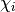 to propagate.
tuples.) – A list of new wavepackets and their
leading components 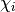 to propagate.